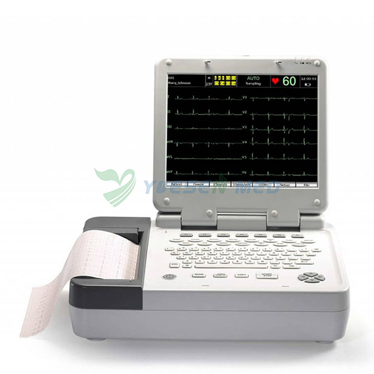
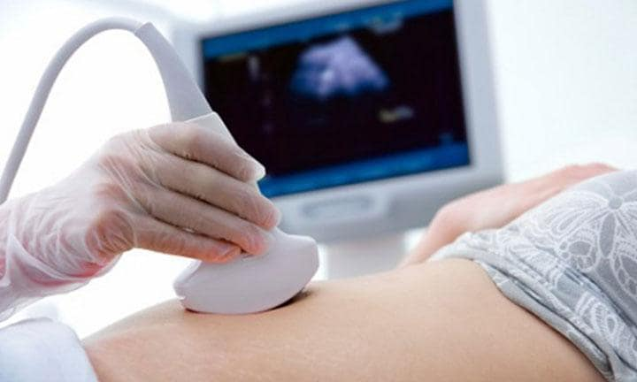
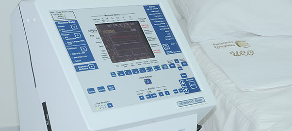
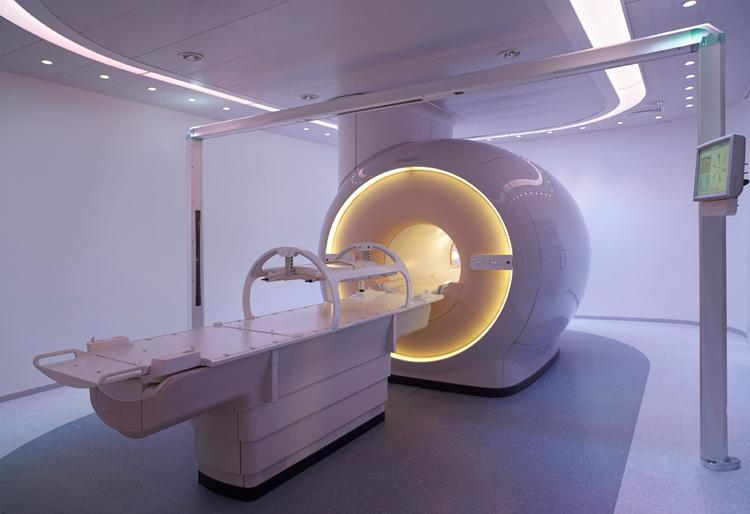

El corazón, al ser un órgano vital, es monitoreado constantemente para detectar anomalías en su frecuencia o ritmo. En esta tarea intervienen las máquinas ECG o el electrocardiógrafo, que capta y amplía los impulsos eléctricos del músculo cuando se colocan los electrodos en cada una de las extremidades del paciente y sobre su zona torácica.
Son equipos para imágenes diagnósticas que facilitan identificar anomalías internas, medir la densidad y la estructura de los órganos, observar los tejidos y vasos sanguíneos, entre otros factores que visibilizan una afección. Su uso no produce dolor en el paciente, tampoco genera radiación.
Su función es ayudar a un paciente a respirar, para ello, cuenta con un sistema que mueve el aire hacia dentro y fuera de los pulmones. Usualmente se emplean en la unidad de cuidados intensivos y las salas de emergencia.
La resonancia magnética es una técnica de obtención de imágenes médicas que utiliza un campo magnético y ondas de radio generadas por computadora para crear imágenes detalladas de los órganos y de los tejidos del cuerpo.
